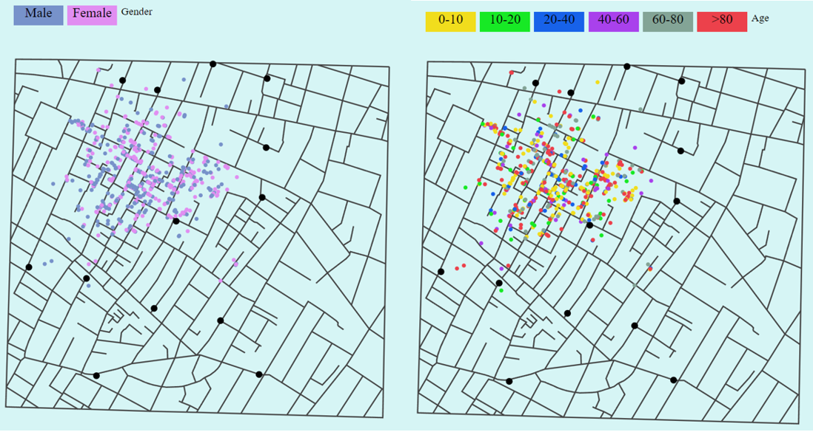

Documentation
Created By: Palak Jain
Guided By: Prof. Khairi Reda
Main purpose of this project is to reproduce Dr.John Snow's map of London's 1854 cholera epidemic and explain it using some interactive visualization. Dr. John Snow's map was itself a masterpiece where anyone has established a link between contaiminated water and Cholera. We can imagine, how this insightful visualizations can help in understanding the root problems.
In this project, I have used D3, HTML and CSS to recreate the map in interactive version.
Dataset:
Three csv and one json file has been provided as input.
1) street.json: Consist of few coordinates data to create a map.
2) pumps.csv: Consist of coordinates for pumps.
3) deathdays.csv : Consist of two features (date, deaths) which represent number of deaths for each day.
4) deaths_age_sex.csv : Consist of 4 columns(x, y, age, gender) which has detail for each death including location, age and gender.
Design Process:
The first task I started with is to create a map using street data and locate all the pumps and coordinates of each death record. Next to it, I created a bar graph representing the number of deaths for each day.
Then, the main task was to make this bar graph and map interactive. I faced some issues while linking these graphs because the provided dataset doesnot contain date of each death directly. I made an assumption here that the data in death_age_sex.csv is sorted by date so that I that I can link it to the deathdays.csv and get date for each record.
After this, I wanted to check location of deaths with respect to their respective gender and age. I used buttons and onclick event to update the map with respect to gender as well as age.
To display total deaths without any filter, I used single color to represent each record on map.
When I updated map with respect to gender, I used two colors: Pink(for female) and Blue(for male).
When I updated map with respect to age, I used the different categorical color to represent the age group but in place of that I can also use the sequential colors. I was in dilemma for assigning colors to different age groups. If I give it as range of same color, it is difficult to differentiate and if I use different colors for different age group, it will not display the increasing value in age. For this project, i came to the conclusion of using different colors for differen age group because i want to see which group has higher count which is little difficult to differentiate in sequential color.
Conclusion:
The main conclusion we can draw from the visualization is that the number of deaths are at peak on September 1 and overall deaths are very related to the location of pump. Some places have high death rate when compared to others. Apart from this, when we check number of deaths with respect to gender, we can see there is no such effect of gender, on the other hand age can be an important factor to note. Death rate is high for age group 5. In conclusion, we can say that the visualization is playing a huge role in understanding the effect of different features on the number of deaths.

References: